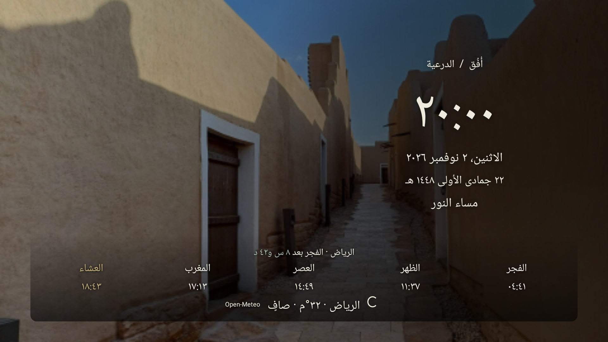
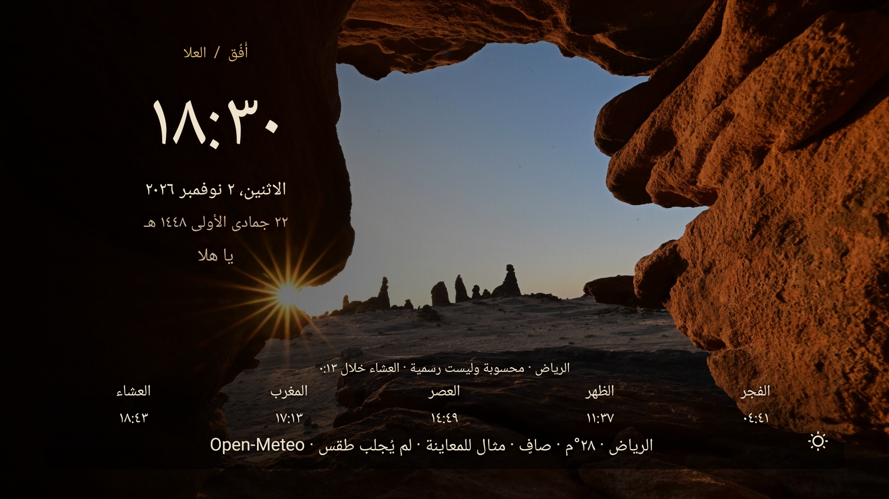
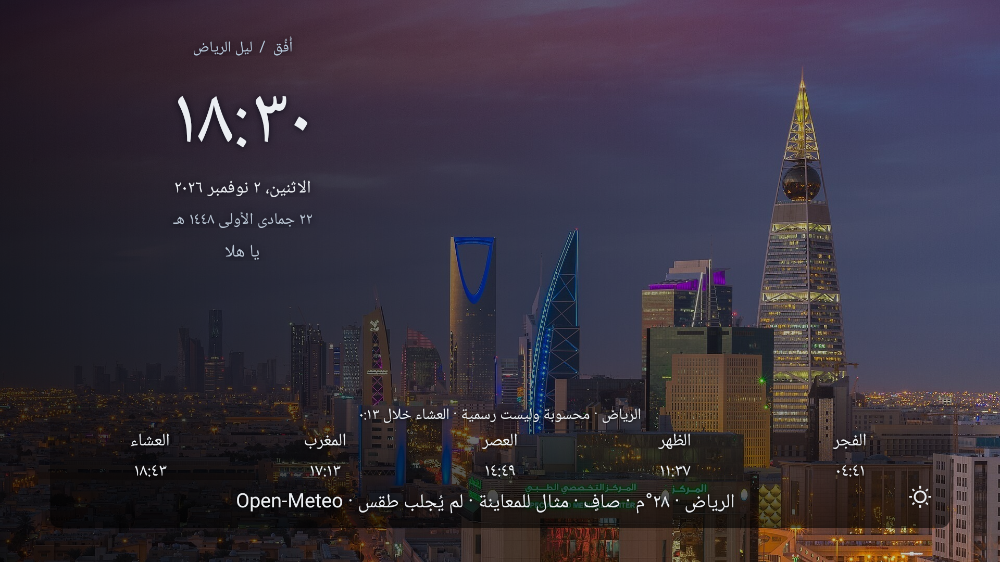
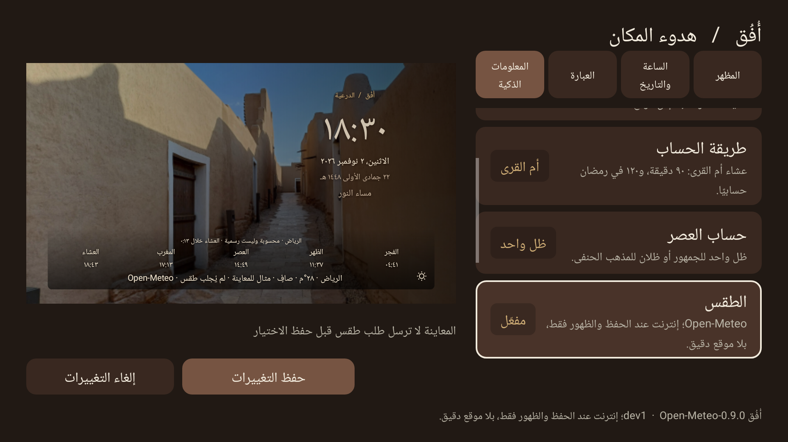
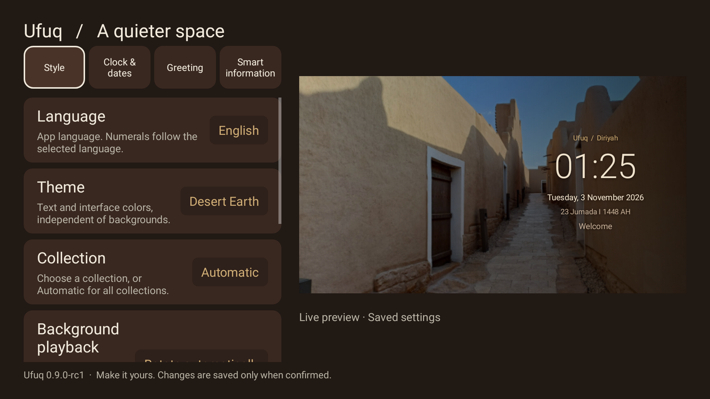

Ufuq Dream - Smart Ambient
0.9.0-rc1 - public prerelease, not Stable
Calculated prayer times, not officialDated reference fixtures, not current weatherHost-rendered captures1080p captures from the actual shared DreamService/Studio renderer. Host rendering does not prove physical-TV performance or distance readability.
Saudi Green / Diriyah

Background diriyah_1; live-rendered text, dated reference fixtures.Desert Earth / AlUla

Background alula_1; live-rendered text, dated reference fixtures.Riyadh Night

Background riyadh_1; live-rendered text, dated reference fixtures.Live Preview Studio / Arabic

Background diriyah_1; live-rendered text, dated reference fixtures.Live Preview Studio / English

Shared live renderer, English dates and automatic matching numerals.Image credits | Methods,privacy,limits | Stable release gates